프로그램 사용법은 부록에 있습니다. 측정을 시작하기 전에 문제 본문과 부록을 모두 읽는 것을 권장합니다.
준비 강의에서 우리는 이미 고체 내 확산과 그 응용에 대해 논의하였다. 이 문제 또한 고체, 특히 다결정(polycrystal) 내 불순물의 확산을 다룬다.
이 부분에서는 물질의 결정 격자(crystal lattice) 내부에서 일어나는 불순물 입자의 확산을 다룬다.
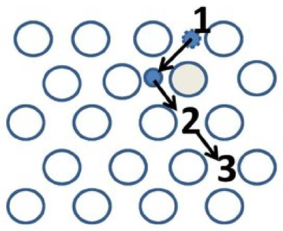
대부분의 “일반적인” 물질에서 결정 격자 내 확산 과정은 확산하는 불순물 원자가 이웃한 격자 칸 사이를 도약(jump)함으로써 일어난다. 불순물 입자는 대부분의 시간을, 불순물 입자와 격자 원자 사이의 상호작용 퍼텐셜 에너지가 최소가 되는 지점 부근에서 보낸다. 이러한 지점의 부근을 격자간 자리(inter‑nodes)라 한다. 보통 불순물 입자의 에너지는 작으므로, 이들은 이웃한 격자간 자리 사이로만 도약할 수 있다. 이를 위해서는 최소한 $E_g$ 만큼의 에너지 장벽을 넘어야 한다. 이 에너지 $E_g$를 활성화 에너지(activation energy)라 한다. 통계물리학으로부터 이러한 전이가 일어날 확률이 $\exp(-E_g/kT)$에 비례함이 알려져 있다. 또한 이웃한 격자간 자리 사이의 도약 시간은 특성 입자 속력에 반비례해야 한다. 따라서
\[D \propto v\,\exp(-E_g/kT),\]여기서 $v$는 불순물 입자의 열운동에 관련된 제곱평균제곱근(rms) 속력이다.
Part A의 프로그램은 입방 격자(cubic lattice)에 대해 격자간 자리에서의 불순물 입자 운동을 시뮬레이션한다. 시뮬레이션할 입자의 수, 온도, 시뮬레이션 시간을 선택하라. 프로그램은 입자 변위의 제곱평균제곱근과 시뮬레이션들 사이의 오차를 출력한다. 모든 프로그램 입출력은 임의 단위(arbitrary units)로 이루어진다.
문제의 나머지 부분에서는, 평평한 경계를 가지는 큰 크기의 고체를 모형화하는데, 그 표면에 많은 수의 불순물 원자가 균일하게 증착되어 있다. 시간이 지남에 따라 불순물 원자는 물질 내부로 확산한다. 시뮬레이션의 결과는, 이 입자들의 침투 깊이 $z$에 따른 고체 내 불순물 입자의 농도 분포 $c$이다.
만약 모든 고체가 미시적 수준에서 완전히 균질한 물체였다면, 그 내부의 확산 문제는 자명할 것이다. 그러나 대부분의 물질은 그 구조상 많은 수의 작은 단결정(single crystal)—낟알(grain)—으로 이루어져 있으며, 그 사이의 경계에서는 물질의 원자들이 무질서하게 배열되어 있다. 이 상태가 최소 에너지를 가지는 것은 아니지만, 통상적인 온도에서는 열역학적 관점에서 여전히 가장 확률이 높은 상태이다. 특히 거의 모든 금속은 본질적으로 다결정이다 (예를 들어, 이 메커니즘이 금속의 소성(plasticity)을 보장하는데, 이는 결정 격자의 일부가 서로에 대해 움직일 수 있게 하기 때문이다).
낟알 경계의 원자들은 무질서하게 배열되어 있고 훨씬 더 “느슨하게” 배열되어 있으므로, 낟알 경계 사이에서의 불순물 원자 이동은 단결정 격자 내부에서의 이동만큼 큰 에너지를 필요로 하지 않는다. 이 때문에 낟알 경계에서의 확산 계수는 그 내부에서보다 훨씬 크며, 이는 다결정 내 확산 과정에 눈에 띄는 영향을 줄 수 있다. 이 문제의 Part B와 C의 목적은 다결정 확산 시 일어나는 현상을 탐구하는 것이다.
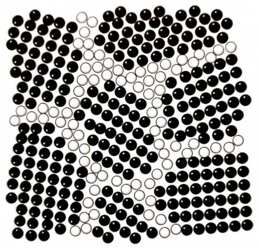
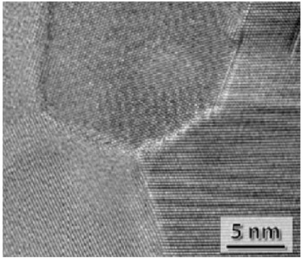
다결정 내 확산 과정에는 세 가지 서로 다른 영역(regime)이 있다. 이들은 각각 A, B, C형 운동학 모드(kinetic mode)라 불린다. A형 운동학 영역은 가장 큰 시간 규모에서, C형 영역은 가장 작은 규모에서 관찰된다. B형 모드는 그 사이의 중간이다. 이 문제에서는 A형과 B형 모드만 다룬다. 특성 확산 규모 $\sim\sqrt{Dt}$가 다결정의 낟알 크기를 초과하면, “삽입된” 물질의 각 원자가 많은 수의 낟알을 통과한다. 이로 인해 확산은 하나의 “전선”(front)을 이루며 진행하며, 낟알 내부의 확산 계수 $D$, 낟알 경계에서의 확산 계수 $D_{gb}$, 그리고 경계가 차지하는 상대 부피 $\delta$에 의존하는 유효 확산 계수 $D_{eff}$로 특성화할 수 있다.
만약 다결정 내 낟알 경계가 오직 확산 방향을 따라서만 배향되어 있다면, 유효 확산 계수는 단순히 $D$와 $D_{gb}$의 가중 평균과 같을 것이다:
\[D_{eff} = D + \delta(D_{gb} - D).\]만약 경계가 확산 방향에 수직으로 배향되어 있다면, $\delta \ll 1$일 때 유효 확산 계수는 사실상 변하지 않을 것이다.
실제 다결정에서는 낟알 경계가 임의로 배향되어 있다. 이 때문에 유효 확산 계수는 위에 주어진 척도와 다르다. 그러한 구조에서 유효 확산 계수 문제를 정확히 푸는 것은 매우 어렵고, 실제로는 극한의 경우 $\delta \ll 1$, $D_{gb}/D \gg 1$에서만 추정값을 줄 수 있다:
\[D_{eff}/D = 1 + \alpha\delta(D_{gb}/D - 1).\]어떤 근사에서 $\alpha$를 추정한 뒤, 이를 실험적으로 구해 보자. $\alpha$를 추정하는 가장 쉬운 방법은 $D_{gb} = \mathrm{const}$에서 $D \to 0$으로 두고, 어떤 간단한 3차원 다결정 구조에 대해 $D_{eff}$를 구하는 것이다. 예를 들어, 두께 $\delta a/3$의 경계로 분리된 크기 $a$의 입방 단결정들로 이루어진 다결정을 생각하자. 유효 확산 계수는 그 계의 한 축을 따른 확산 계수로 추정할 수 있다 (이는 세 축 모두에서 동일할 것이다).
프로그램의 도움으로 이 추정의 타당성을 확인해 보자. 프로그램은 임의의 다결정 구조를 시뮬레이션한다. Part B와 C의 프로그램은 $a, D = 1$이고 시간 단위가 $D/a^2$이 되도록 상대 단위로 입력값을 받는다. 경계에서의 확산 계수 $D_{gb}$, 시뮬레이션 시간 $t$, 경계의 상대 부피 $\delta$를 조정할 수 있다.
참고: 다음 항목을 수행할 때, 유효 확산 계수 $D_{eff}$를 가지는 균질 결정의 경우 침투 깊이 $z$에 따른 입자 농도 분포 $c$가 다음 형태를 가진다는 것을 알려진 것으로 간주하라:
\[c(z) = \frac{N_0}{4\sqrt{\pi D_{eff} t}}\exp\!\left(-\frac{z^2}{4D_{eff}t}\right).\]Bavg.csv 파일에 기록된다. 이 의존성은 B.nb 프로그램으로 분석할 수 있다.끝으로, 계수 $\alpha$가 확산이 일어나는 공간의 차원에 의존한다는 점을 언급해 둘 만하다.
문제의 앞부분에서는, 확산의 특성 규모가 다결정 내 불균질성의 크기보다 훨씬 큰 확산 유형을 다루었다. 그러나 이것이 다결정에서 관찰될 수 있는 유일한 확산 모드는 아니다. 만약 확산 규모가 다결정의 낟알 경계 너비보다는 훨씬 크고 낟알 자체의 크기보다는 훨씬 작다면, B형 운동학 확산이 일어난다.
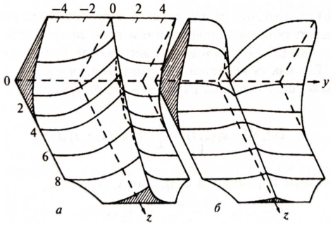
이 확산 유형의 주된 특징은, 평균 농도의 로그 $\bar c$가 깊이 $z$에 대해 2차가 아니라 $6/5$ 거듭제곱으로 의존한다는 점이다. 이 값은 해석적으로 유도된 것은 아니지만, 실험에서 매우 잘 관찰되어 그러한 의존성의 존재가 실험의 품질 지표로 사용될 정도이다! 이러한 “비해석성”에도 불구하고, 의존성 $\ln\bar c(z^{6/5})$의 매개변수들은 상당히 정밀하게 알려진 매개변수들과 함께 경험식에 포함된다. 문제의 나머지 부분은 B형 확산과 그로부터 생기는 관계식들의 연구에 할애된다.
$\ln\bar c(z^{6/5})$의 선형 의존성을 해석적으로 얻을 수는 없지만, 이 의존성의 매개변수들은 (물리적 이유로 — 무차원 변수 $\delta$, $D_{gb}/D$, $Dt/a^2$로부터, 여기서 $a^3$은 다결정 낟알 하나의 부피이다) 문제의 입력 매개변수들로 명확하게 표현된다. 다음과 같이 쓸 수 있다:
\[\frac{d\ln c}{dz^{6/5}} = -C\,\delta^{\xi}\,a^{\psi}\left[\frac{D_{gb}}{D}\right]^{\eta}\left[\frac{Dt}{a^2}\right]^{\zeta}.\]여기서 $C$는 $\sim 10^0$ 정도의 수치 계수이다.
Cavg.csv 파일에는 불순물 입자의 평균 농도의 로그 $\ln\bar c$가 침투 깊이 $z^{6/5}$에 대해 가지는 의존성이, Cmap.csv 파일에는 농도의 로그 $\ln c$가 침투 깊이 $z^{6/5}$와 고체 표면을 따른 $y$ 좌표에 대해 가지는 의존성이 담긴다. 이 의존성들은 C.nb 프로그램으로 분석할 수 있다.이 문제를 위한 소프트웨어는 ISPhO 폴더에 있다. 필요한 프로그램은 다음과 같다.
A.exeB.exeC.exeInteractiveBuffer.nbB.nbC.nb앞의 세 프로그램은 모형화에 사용되고, 나머지 세 프로그램은 얻어진 데이터의 시각화와 처리에 사용된다.
.exe 파일 다루기 .exe 확장자를 가진 파일들은 명령줄 인터페이스를 제공한다. 프로그램이 시작되면 일련의 입력 매개변수를 요구한다:
A.exe는 Part A에서 사용된다. 프로그램은 시뮬레이션 시간, 결정 온도, 시뮬레이션 반복 횟수를 요구한다. 시간과 온도는 임의 단위로 측정된다. 활성화 에너지도 같은 단위로 주어야 한다! 반복 횟수와 시뮬레이션 시간을 늘리면 결과의 정확도가 높아지지만, 상당히 시간이 걸릴 수 있다. 먼저 이 매개변수들의 작은 값으로 시뮬레이션을 실행하는 것을 강력히 권장한다.B.exe는 Part B에서 사용된다. 프로그램은 시뮬레이션 시간, 다결정 낟알 경계에서의 상대 불순물 확산 계수, 경계의 상대 부피를 요구한다. 보통 시뮬레이션은 꽤 빠르다.C.exe는 Part C에서 사용된다. 프로그램은 같은 매개변수 집합을 받지만, 훨씬 작은 규모의 효과를 시뮬레이션하기 때문에 조금 더 시간이 걸린다. 이 부분에서는 측정을 계획하는 것이 좋을 수 있다.모든 프로그램은 예상 시뮬레이션 시간을 표시한다. 이는 컴퓨터의 사양에 따라 실제 시뮬레이션 시간과 다를 수 있다. 생성한 .csv 파일을 삭제하거나 편집하지 마라!
.nb 파일 다루기 결과를 빠르고 편리하게 시각화하고 처리하기 위해, Wolfram Mathematica 컴퓨터 대수 패키지를 기반으로 한 .nb 확장자 프로그램(이른바 “노트북”)을 사용한다.
InteractiveBuffer.nb는 입력된 점들을 기억하고, 그래프로 그리며, 최소제곱법으로 직선을 긋는 간단한 프로그램이다. 이 프로그램은 문제를 풀기 위한 “응용 도구”로서 존재한다.B.nb는 Part B의 실제 시뮬레이션 결과를 불러와 $\ln\bar c(z^2)$로 그리고, 문제의 요구 사항에 맞게 적합(fit)시키는 도구이다.C.nb는 Part C의 실제 시뮬레이션 결과를 불러와 $\ln\bar c(z^{6/5})$ 의존성을 그리고, 문제의 요구 사항에 맞게 적합시키는 도구이다. 또한 다결정 낟알 경계에서의 상세한 농도 분포를 그릴 수 있게 해 준다..nb 파일의 소스 코드를 변경하는 것은 기술적으로 가능하지만, 강력히 권장하지 않는다! 소스 코드를 손상시키면, 초기 상태로 되돌리는 데 도움을 받을 수 없다!InteractiveBuffer.nb 예시 올림피아드 참가자들이 Wolfram Mathematica로 작업하는 것을 더 쉽게 하기 위해, 이 부록에서는 프로그램 중 하나인 InteractiveBuffer.nb에 대한 단계별 안내를 제공한다. 파일을 연 후에는 그 내용이 화면에 나타나야 한다 (세부 사항은 WM 버전에 따라 다르게 보일 수 있다):
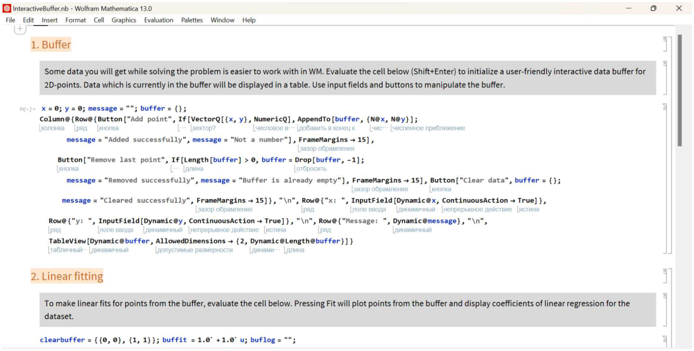
코드 셀의 아무 곳이나 클릭하고 Shift+Enter를 누르라. 이는 셀의 코드를 실행한다. 새로운 셀이 아래쪽에 나타나며 다음과 같이 보일 것이다:
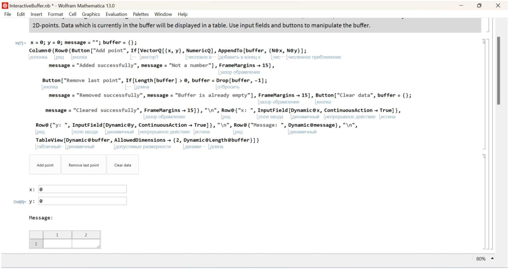
이것이 문제를 풀 때 사용할 수 있는 대화형 버퍼(interactive buffer)이다. 대화형 입력 필드에 $x$와 $y$ 좌표를 입력할 수 있다. 그런 다음 Add point 버튼을 누르면, 이 값들이 버퍼에 추가된다:
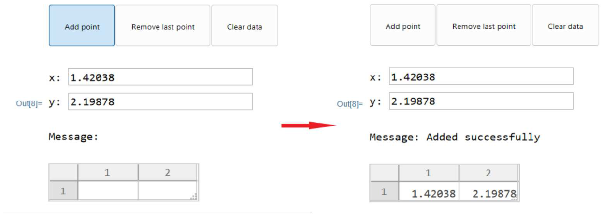
버퍼에 잘못된 점을 추가한 경우, 프로그램은 버퍼의 마지막 점을 제거할 수 있는 기능을 제공한다. 이를 위해서는 Remove last point 버튼을 클릭하라:
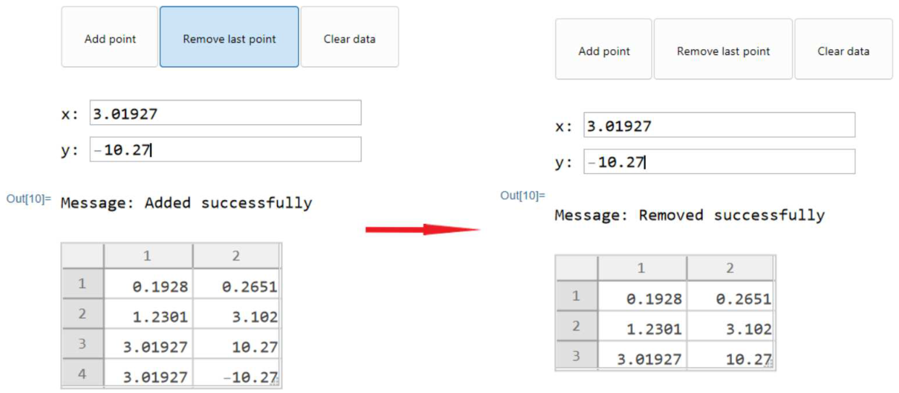
버퍼를 완전히 비우려면 Clear data를 클릭하라:
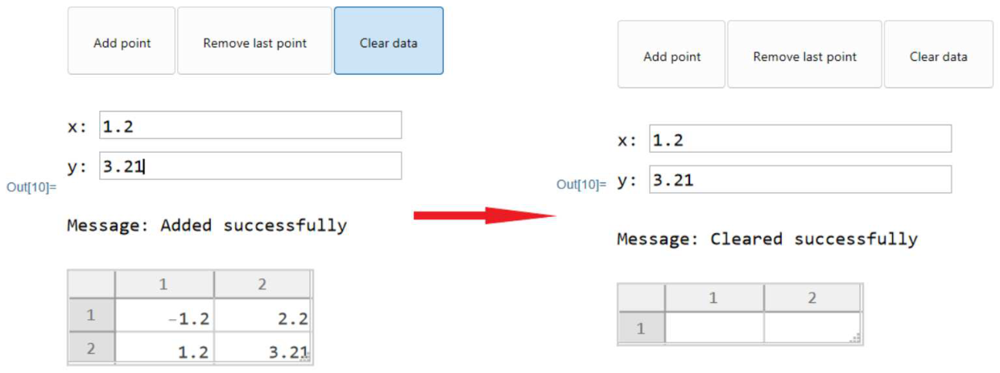
버퍼를 필요한 점들로 채운 후, 두 번째 섹션의 셀을 실행하라. 결과는 다음과 같이 보일 것이다:
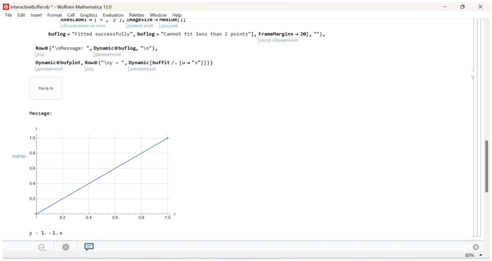
Plot fit 버튼을 누르면, 프로그램은 버퍼의 점들을 그리고 그에 대한 선형 회귀 계수를 계산한다. 버퍼 내용과 그에 대응하는 적합 결과의 예시:
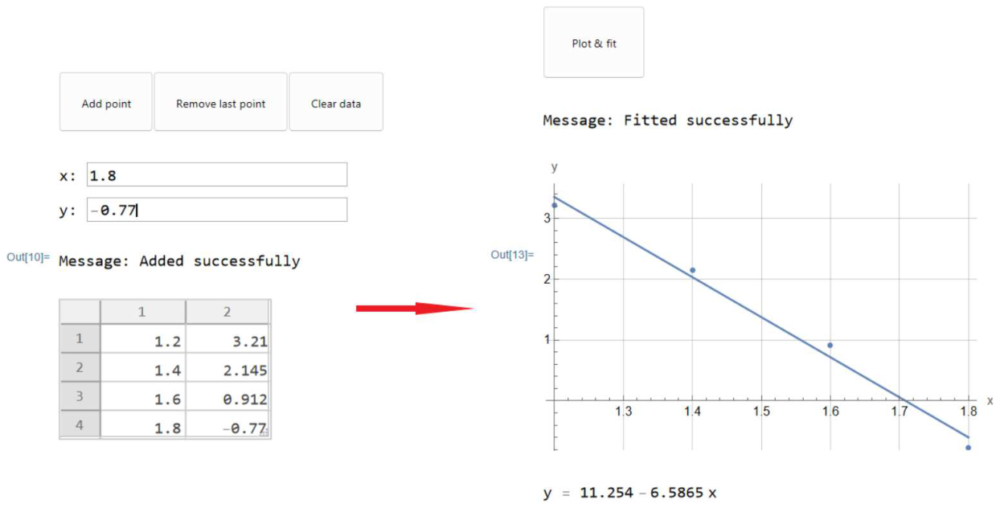
나머지 .nb 파일들도 주석과 직관적인 인터페이스를 갖추고 유사한 방식으로 보이고 동작한다.